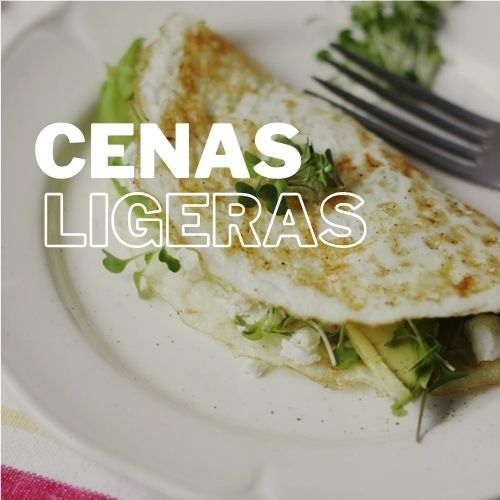

Ingredientes
- 6 claras de huevo
- 1 taza de espinacas frescas
- 1 taza de champiñones
- 1 diente de ajo
- 2 cucharadas de aceite
- Sal y Pimienta
Instrucciones
- En una sartén grande, calienta 1 cucharada de aceite de oliva a fuego medio.
- Agrega el ajo picado y saltea durante 1 minuto, hasta que esté fragante.
- Añade los champiñones y saltea durante 3-5 minutos, hasta que se doren ligeramente.
- Agrega las espinacas frescas y cocina durante 2-3 minutos, hasta que se marchiten.
- Sazona con una pizca de sal y pimienta. Retira del fuego y reserva.
- En un bol, bate las claras de huevo (y las yemas si decides añadir) con una pizca de sal y pimienta hasta que estén ligeramente espumosas.
- En la misma sartén (limpia o con solo un toque de aceite si lo prefieres), calienta la cucharada restante de aceite de oliva a fuego medio.
- Vierte las claras de huevo en la sartén y deja que se cocinen durante 2-3 minutos sin moverlas, hasta que empiecen a cuajar en los bordes.
- Cuando las claras estén parcialmente cocidas, distribuye las espinacas y los champiñones salteados de manera uniforme sobre una mitad de la tortilla.
- Con cuidado, dobla la tortilla por la mitad y deja que se cocine durante 2-3 minutos más, o hasta que las claras estén completamente cocidas y la tortilla esté dorada.
- Si deseas, puedes espolvorear un poco de queso rallado bajo en grasa o hierbas frescas por encima para un toque extra de sabor.
Saltear las verduras:
Preparar las claras:
Cocinar la tortilla:
Terminar la tortilla:
Información Nutricional
| Calorías | 250 kcal |
|---|---|
| Proteínas | 6g |
| Grasas | 5g |
| Carbohidratos | 45g |
| Fibra | 8g |
| Azúcares | 12g |